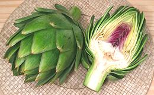
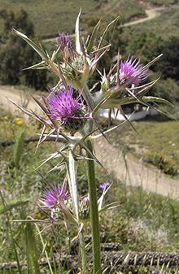

SAFARI
Users
- Cardoons
- Globe Artichoke - General.
- Globe Artichoke - Varieties.
- Other Thistles
Cardoons
[Cardoni, Cardi; Chard (archaic), Wild Artichoke, Artichoke Thistle; Cynara cardunculus]
This thistle, closely related to the Globe Artichoke, is native to the drier parts of the Mediterranean basin, from Portugal to Greece, and Morocco to Lybia. The large, fleshy leaf stems are widely used as a vegetable in Portugal, Spain, France, Italy and North Africa. The taste is complex, interesting and artichoke-like - if you have developed a taste for slightly bitter vegetables (a worthwhile taste to develop). Details and Cooking.
Ecology:
Cardoons are decorative, but should not be planted except where they will be carefully controlled. They are aggressive weeds with wind dispersed seeds, and have pushed out native flora in parts of California, Australia, Argentina and elsewhere.Globe Artichokes
[Cynara scolymus] The edible artichoke is the flower bud of a thistle like plant native to the Mediterranean region, the buds being harvested when mature but not yet opened. It is not known if the Globe Artichoke existed in its current form during the classical Greek and Roman periods but it was definitely available by the 12th century. It may have been developed by selective breeding from the Cardoon, but that too is uncertain.
Essentially all fresh artichokes sold in the U.S. are grown in California, and the dominant Green Globe variety is grown almost entirely in the Salinas Valley on the central coast, production centering in Castroville and Moss Landing. This crop was originally planted by Italian families in the late 1800s and these families remain rather secretive about how to grow the Green Globe commercially.
Frost Damage / Wind Burn:
Artichokes hit by frost or wind will look a bit grungy. They may be sold at a lower price, or may be the only ones available at a certain time. Aside from appearance, they are generally undamaged - just pull of the tough outer leaves and trim the tips of the remaining leaves.Health & Nutrition:
Artichokes have an antioxidant load considered among the highest for vegetables. They also contain compounds that contribute to healthy digestion (increasing bile flow, improving liver function and supporting beneficial gut bacteria) as well as reducing blood cholesterol and improving the HDL/LDL ratio. Artichoke extracts have been found useful for treating functional dyspepsia and irritable bowel syndrome. The beneficial components are found mostly in the flesh coating the leaves rather than in the heart.Globe Artichokes - Varieties
Green Globe Artichoke The dominant artichoke in California, the Green Globe is grown in Monterey County on the central coast. The harvest begins in March and continues well into May with a smaller harvest in September and October. Sizes range from 18 count (jumbo) through 60 count, plus "large loose" (cocktail) and "small loose" (baby) sizes. The "count" is for a 22 to 24 pound case. The Green Globe is a perennial crop and fairly expensive to produce so
attempts to replace it with lower cost annual varieties growable in
other parts of California are being made - so far with less than fully
satisfactory results.
Details and Cooking
Baby ArtichokeThese are not "baby" at all but mature buds that grow lower on the stalk after the big flower at the top has been cut. They are used quite differently from the large artichokes. Most harvested in California formerly went to marinated artichoke heart production but that business has moved to Spain. "Babies" are consequently becoming more common in the markets and people are learning how to cook them. Artichoke HeartsThese are smaller Baby Artichokes, trimmed all the way down to just the edible part, and sold either frozen or canned. Canned is how they will be most easily found here in Southern California, and some report the canned are better than the frozen. The two at the left are "hearty" size and the rest are "baby" size. Details and Cooking. Thornless Artichoke[Imperial Star] This "seed" variety was developed by the University of California (famous for durable but flavorless tomatoes) as an annual that would be less expensive to grow than the perennial Green Globe. It has met considerable consumer resistance because it is neither as tasty nor nearly as meaty as the Green Globe. Harvest is January through April and August through October. Sizes range from 18 count (jumbo) through 60 count. Desert Globe ArtichokeA proprietary semi-thornless "seed artichoke" developed to counter consumer resistance to the Thornless Artichoke but also grown as an annual crop. It has better flavor and more meat than the Thornless but is still inferior to the Green Globe on both counts. Most production is in Southern California's Riverside and Ventura counties with harvest running from January through March. Sizes range from 18 count (jumbo) through 60 count, plus "large loose" (cocktail) and "small loose" (baby) sizes. Big Heart ArtichokeA thornless variety with a wide base that's meatier than the Imperial Star thornless. Grown on the California Central Coast and in the Imperial Valley just north of the Mexican border it is harvested in all months except December, January and April. Sizes range from 8 count (huge) to 48 count. The leaves aren't as fleshy as those of the green globe, but the heart is substantial and has good flavor. The center of the stem can be scooped out with a spoon and eaten. The photo specimen was 4-1/2 inches diameter and weighed 1 pound 3-1/4 ounces. Lyon Artichoke[Gros Vert de Laon]
These very spherical artichokes were developed in France, but are now
grown also in California. They are very large, weighing up to two
pounds each. They are usually shipped with substantial stem because
the core of the stem is edible. The heart is quite large.
Sangria ArtichokeThis is a new patented variety released in 2013. The color results from anthocyanin antioxidants. Aside from decorative color, I found nothing outstanding about this artichoke. The larger was 3-3/4 inches diameter and weighed 10-7/8 ounces. Euro ChokesA trade name for perennial varieties recently developed in France. These are now being grown in California and are shipped with stems as long as 16 inches. The stems contain a lot more edible flesh and less tough fiber than the typical California artichoke. Photo © i0119. |
Other Thistles
Scotch Thistle
[Cotton Thistle; Onopordum acanthium]
This plant is native from Iberia east to Kazakhstan and as far north as
central Scandinavia. While today it is grown mainly as a decorative and
for medicinal properties, in times past the receptacles (flower bases),
which can get up to 2 inches across, were eaten similar to how artichokes
are eaten today. They're rather small and difficult to handle, so aren't
much eaten any more. The seeds were pressed for oil for both cooking
and lighting.
Photo by (Unknown) distributed under license Creative
Commons
Attribution ShareAlike 3.0 Unported.
Edible Thistle
[Cirsium edule]
This plant grows from southeast Alaska though British Columbia, Canada,
into Oregon, and there is an isolated population in Iowa. It grows to
about 6 feet tall with flower heads about 1-1/2 inch across - too small
to eat. American Indians ate young shoots and root tubers. The tubers
contain inulin, an indigestible carbohydrate that gives some people
digestive distress, but which others consider an important health food.
Most people can handle it if they start out with just a little
and build up. Inulin is also found in Chicory and other roots.
Photo by Walter Siegmund distributed under license Creative
Commons
Attribution ShareAlike 3.0 Unported.
Creeping Thistle
 [Canadian Thistle, Lettuce From Hell Thistle, California Thistle,
Corn Thistle, Cursed Thistle, Field Thistle, Green Thistle, Hard Thistle,
Perennial Thistle, Prickly Thistle, Small-flowered Thistle, Way Thistle;
Cirsium arvense]
[Canadian Thistle, Lettuce From Hell Thistle, California Thistle,
Corn Thistle, Cursed Thistle, Field Thistle, Green Thistle, Hard Thistle,
Perennial Thistle, Prickly Thistle, Small-flowered Thistle, Way Thistle;
Cirsium arvense]
This thistle is native to Europe and northern Asia, but is now considered
a noxious weed in the United States, Canada, Australia, New Zealand and
Brazil. The leaves are edible but too spiny to prepare. The stems, however
are not so difficult and can be cooked as a vegetable. The tubers are
edible and nutritious, but contain inulin, an indigestible carbohydrate
that gives some people digestive distress, but which others consider an
important health food. Most people can handle it if they start
out with just a little and build up. Inulin is also found in Chicory and
other roots.
Photo by MrJones distributed under license Creative
Commons
Attribution ShareAlike 3.0 Unported.
Stemless Carline Thistle
[Dwarf Carline Thistle, Silver Thistle, Hunter's Bread; Carlina acaulis]
This is a rather odd thistle. It forms a rosette of regular prickly
thistle leaves, but never sends up the typical tall stem. The flower just
opens right out of the rosette on one of the two subspecies, and atop a
very short stem on the other. This plant is native to alpine regions of
central and southern Europe, preferring dryish pastures. Young flower head
buds can be cooked and eaten like globe artichokes, which resulted in the
common name "Hunter's Bread".
Photo by Bernd Haynold distributed under license Creative
Commons
Attribution ShareAlike 3.0 Unported.
Cabbage Thistle
[Cirsium oleraceum]
Native to Central and Eastern Europe and Asia, this thistle grows to
about 5 feet high, usually with a single unbranched stem, and prefers
moist lowlands. The flower heads are dense and the flowers light yellow
or slightly pink. It is cultivated in India and Japan for edible young
stems, cooked as a vegetable. I chose the watercolor rather than any of
the available photographs because it better shows both leaf and flower
head.
Watercolor by Carl Axel Magnus Lindman, copyright expired
.
Syrian Thistle
 [Agavanos (Crete); Notobasis syriaca]
This nasty looking semi-desert plant is native from the Canary Islands
in the Atlantic, along North Africa, through the Levant, and into the
Middle East. It doesn't look very edible, but on the island of Crete,
tender shoots are peeled and eaten raw. This plant grows to about 39
inches high, so the shoots can be substantial.
Photo by Hans Hillewaert distributed under license Creative
Commons
Attribution ShareAlike 3.0 Unported.
Links
- A2 - Recipes - California Artichoke Advisory Board.
- A3 - Recipes - The Gutsy Gourmet.